吃花不是新鮮事：食用花的小歷史
兩千多年前的中國人就吃花，而且早就知道：同樣是菊花，有的只能看，有的才能吃。這正是今天「食用花三問」的道理。
- 約 2300 年前中國・戰國時代
詩人屈原在《離騷》寫下「夕餐秋菊之落英」，意思是傍晚吃秋天菊花落下的花瓣。
- 約 2000 年前中國・漢代
重陽節有喝菊花酒、祈求長壽的習俗，一直流傳到今天。
- 古人早就知道觀賞菊 vs. 食用菊
古書把能吃的菊花稱為「真菊」，和只能欣賞的觀賞菊分開。不是每一朵菊花都能吃！
- 約 800 年前中國・南宋
林洪寫的食譜《山家清供》，記錄了把菊花加進飯裡、煮成湯的做法。
四格漫畫：奶奶的花朵魔法廚房
約 150 年前的英國，甜點常用鮮花和糖漬花裝飾，飯後還會喝接骨木花做的飲料。開場時投影，念出最後一格奶奶的提醒。
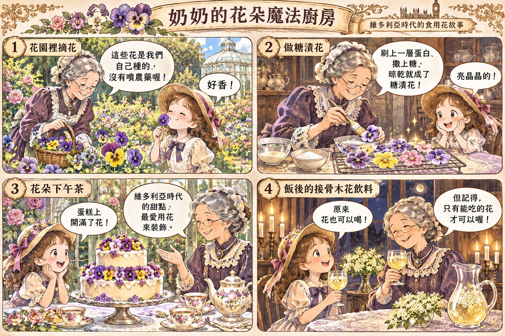
資料來源：中時新聞網〈食菊〉、揚子晚報〈菊花文化〉
本課重點：能不能吃，看來源，不看長相
同一種花，從農場來的可以吃，學校圍牆邊開的就不一定。孩子用三個問題判斷，三題都是「是」才能吃，有一題不確定就不吃。
練習看包裝：一盒真正的食用花長這樣
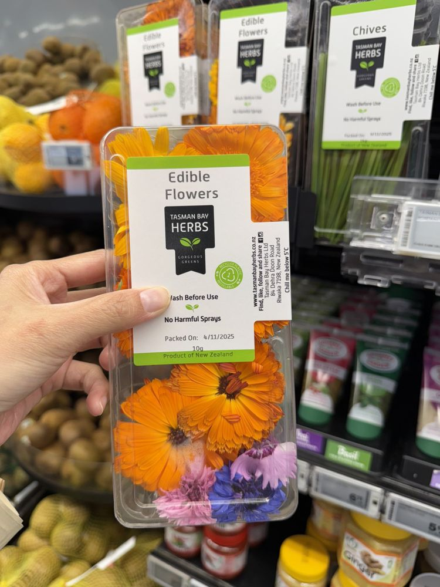
請孩子找找看，包裝上有哪些線索告訴我們「這盒花可以吃」：
同樣是三色堇，可以吃嗎？
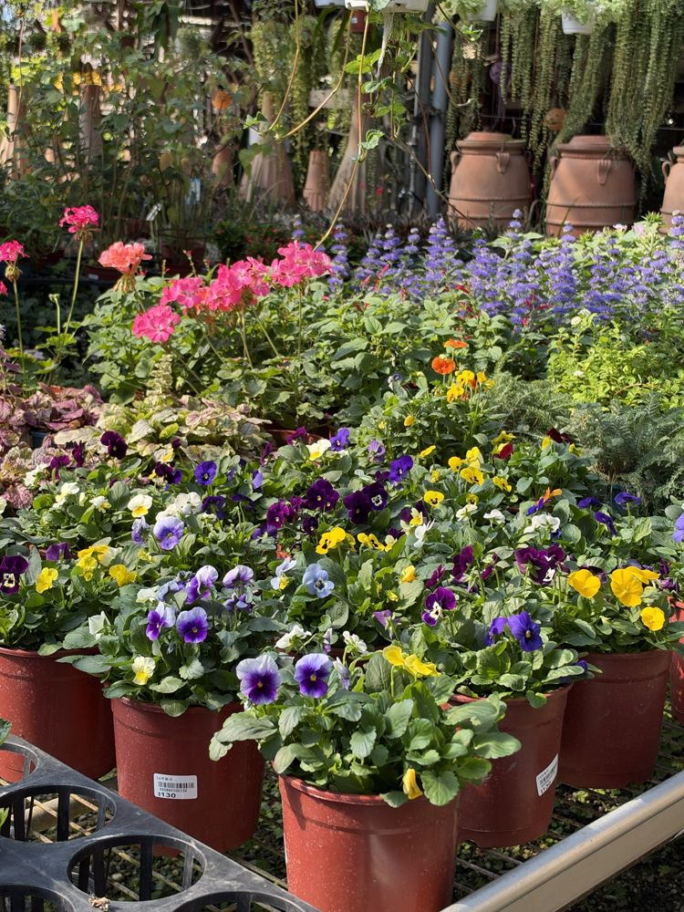
15 分鐘教學流程
四段式，重點都放在「食用花三問」。煎烤等待的時間拿來玩遊戲，收拾由大人在課後處理。
- 開場：哪些花可以吃？
投影四格漫畫，只念最後一格奶奶那句「只有能吃的花才可以喔！」再補一句：中國古人也分「能吃的真菊」和「只能看的觀賞菊」。接著講「食用花三問」，再秀出上方的包裝照和「花市盆栽 vs. 吐司上的三色堇」，問孩子：同樣是三色堇，哪一朵可以吃？顧火人員同時熱鍋。
- 洗手、組裝
在冷操作區依序鋪起司、番茄、迷迭香碎。老師邊做邊說：迷迭香吃「葉」、番茄吃「果實」、三色堇吃「花」。
- 煎烤＋食用花偵探
兩鍋各放 7–8 片半片吐司，小火加蓋約 4–5 分鐘，1 批完成。等待時投影遊戲，全班一起玩兩關：植物部位、屈原吃的是什麼花？
- 三問確認、放花、品嚐
吐司稍涼後，全班一起用「食用花三問」檢查花盒，每人放 1 朵三色堇，品嚐。
學習目標
分辨食用花
說出「食用花三問」，知道不能只看長相判斷。認識植物部位
迷迭香吃葉、番茄吃果實、三色堇吃花。安全
洗手、不碰火源、守安全線。食用花偵探：兩個遊戲關卡
等待煎烤時投影在大螢幕，全班一起作答，約 5 分鐘。
食用花材：農場當季裝飾花
課堂只介紹 3 種：主角三色堇，加上冬天也常出貨的朱槿和玫瑰。農場每份隨機出貨約 15–20 朵，15 人訂 1 份，每人放 1 朵。
花期月曆
深色是盛花期，淺色是會開花的月份，框起來的是本月。月份為一般栽培情況，實際出貨以農場為準。
花期資料：UpToGo（三色堇）、紅土森林小宇宙（朱槿）；玫瑰為一般栽培情況。
有實拍照片的花放在第一張，其餘為示意插畫；左右滑動或按箭頭可看整朵、花簇或花瓣、放在吐司上的樣貌。照片出處標在圖上。實際出貨的顏色與大小依當季而定。
保存與處理
到貨立即冷藏，建議上課前 1 天到貨。使用前輕沖或用濕紙巾輕拭並吸乾。朱槿、玫瑰由大人先剝成小片。不認識的品種，先確認農場標示再使用。食材與人力（15 人份）
| 食材 | 採買量 | 事前處理 |
|---|---|---|
| 吐司 | 9 片 | 切約 8×8 公分半片，可去邊 |
| 披薩用起司絲 | 420 公克 | 分裝 3 個組別盤 |
| 小番茄 | 約 35 顆 | 洗淨去蒂、切四瓣 |
| 新鮮迷迭香 | 3 枝 | 切碎；另留 3 小枝給各組觀察 |
| 食用裝飾花 | 1 份（約 15–20 朵） | 冷藏，上課前取出 |
| 奶油或食用油 | 少許 | 顧火人員使用 |
份量已含約 10% 備用量。
人力
- 主講老師 1 位：介紹、示範、控時、帶遊戲
- 顧火人員 2 位：各顧 1 座爐具，全程不離開火源
- 協同巡視 1 位（建議）：洗手、發食材、照顧過敏學生
設備與動線
- 電磁爐 2 座、帶蓋平底鍋 2 只、鍋鏟、隔熱手套
- 烘焙紙 15 張、組別食材盤 3 份、濕紙巾、垃圾袋
- 火源區靠牆，前方劃出約 1.5 公尺安全線；孩子只在線外觀察
安全與衛生
用火
火源區由 2 位成人全程看守。剛起鍋的吐司放涼 2–3 分鐘再交給孩子。過敏
課前以家長回條確認小麥、乳製品、番茄等過敏，過敏學生改用替代食材或僅觀察。食用花
只用農場標示可食用、無農藥栽種的花。有毒植物只用照片，不帶實物進教室。校方規定
用火、電器與飲食活動依學校規定辦理；燙傷先以流動冷水沖 15–20 分鐘並通知健康中心。學習單（3 題，可回家完成）
- 食用花三問：寫出判斷一朵花能不能吃的三個問題。
- 連連看：迷迭香、番茄、三色堇連到「葉／果實／花」。
- 畫出我的小花園吐司，並寫一句：今天我發現＿＿＿。
不打分數，以「完成／需協助」記錄。遊戲第二關答對 4 題以上，即達成「分辨食用花」目標。
課後延伸（課堂上不用講）
時間有限，以下內容留給有興趣的老師、家長或下一堂課使用。點開即可展開。
世界各地吃花的故事（古羅馬、美洲、英國）
- 約 2000 年前古羅馬
羅馬人把玫瑰、紫羅蘭、錦葵放進菜裡，還在醬汁裡加薰衣草。
- 很久以來美洲
美洲原住民會吃南瓜花；墨西哥人用朱槿花泡成冰涼飲料，也做成冰淇淋。
- 約 150 年前英國・維多利亞時代
甜點常用鮮花和糖漬花裝飾，飯後還會喝接骨木花做的飲料。
- 今天台灣與世界
有農場專門種食用花，做成蛋糕、棒棒糖、沙拉、春捲，還有我們的小花園吐司。
資料來源：中時新聞網〈食菊〉、揚子晚報〈菊花文化〉、The Chef's Garden、Chef's Pencil、The Chef's Garden（維多利亞時代）
朱槿怎麼吃？小朵撒、大朵切絲（紅土森林小宇宙）
朱槿幾乎四季都開花，花朵大、花瓣有厚度，是很好上手的食用花。農場種了單瓣、重瓣和多種顏色。
- 小朵：把花瓣或小花剝下來，撒在餐點上。
- 大朵：整朵直接裝飾餐盤；或把花瓣切絲，混在沙拉裡像蔬菜一樣，不習慣吃花的人也容易入口。
- 當配菜：各色花瓣集合一小撮，加點醬料放在主餐旁。
- 課堂應用：切絲由大人先處理；孩子負責撒花瓣，再用「食用花三問」確認來源。
文字與照片出處：紅土森林小宇宙
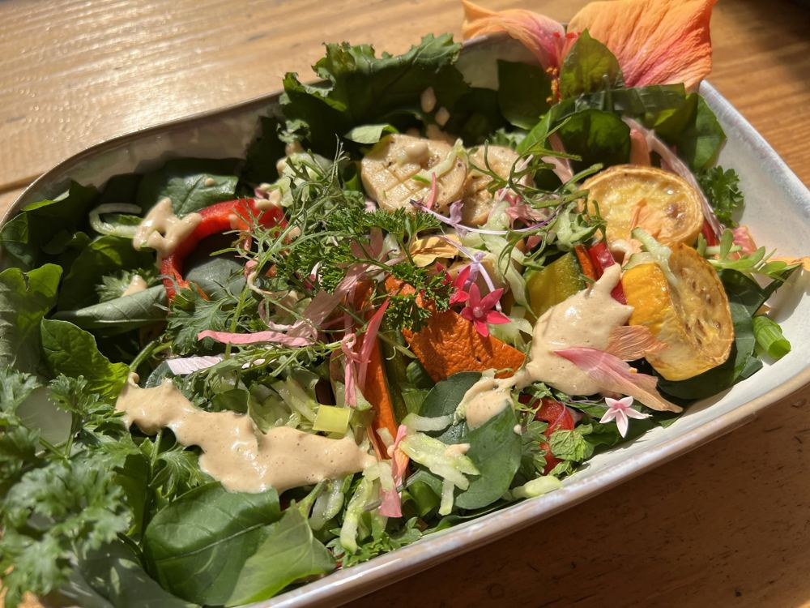
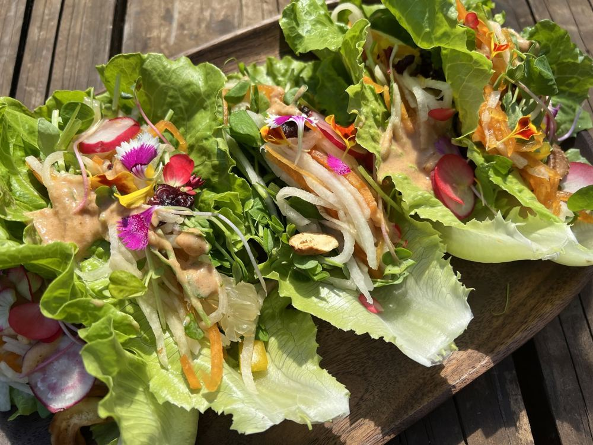
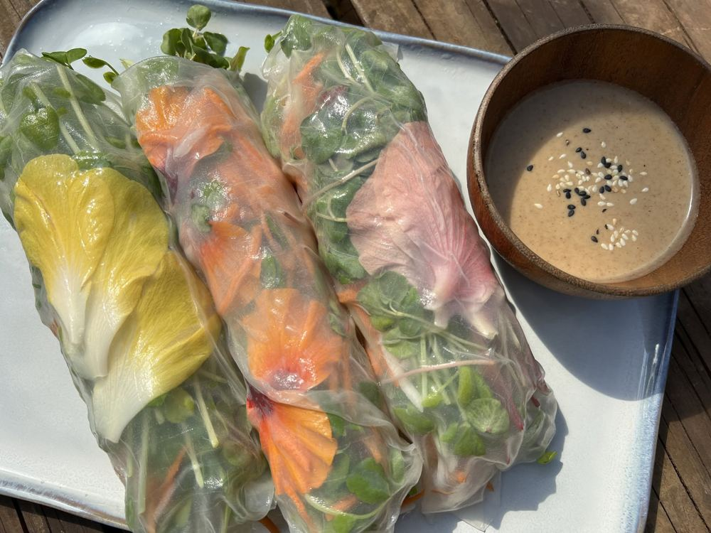
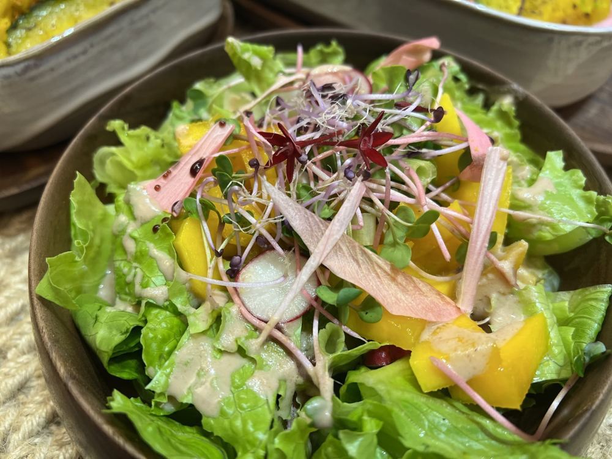
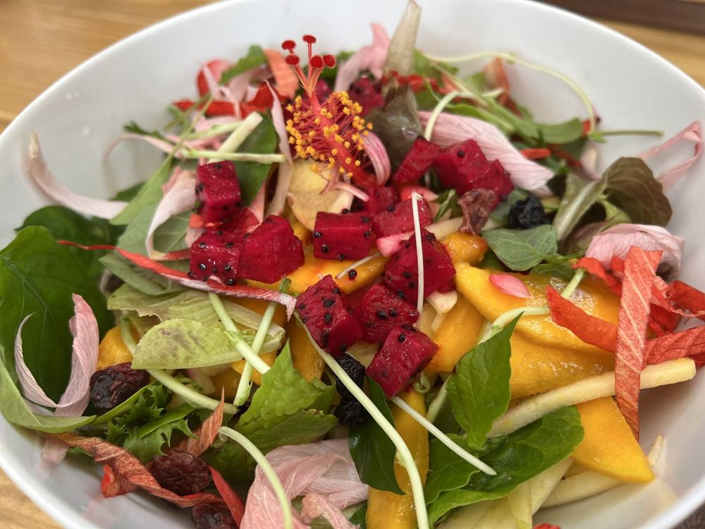
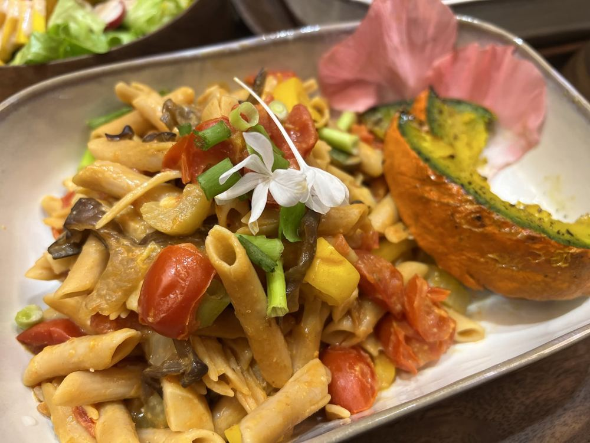
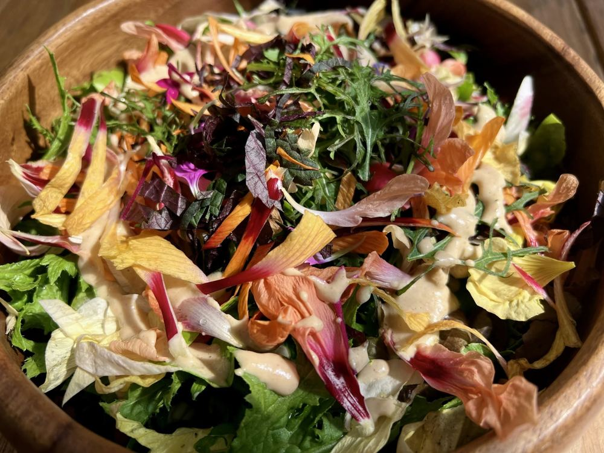
料理示範（7 張）
可以泡茶的植物
植物不只能吃，有些葉子、花朵還能泡成茶。泡的部位各不相同，茶的顏色也不一樣，有的加了檸檬汁還會變色。
課堂小實驗：會變色的茶
大人先泡好放溫的蝶豆花茶和紫蘇茶，各倒兩杯。其中一杯滴入檸檬汁，孩子觀察：藍色變紫色、紫紅色變粉紅色。約 5 分鐘，可當開場或延伸活動。泡茶安全
熱水一律由大人倒，放到溫熱再給孩子。第一次喝先試一小口。有過敏或身體狀況特殊的孩子，先問過家長。泡茶的植物一樣要通過「食用花三問」；校園裡種的植物，要老師確認過才能採。其他延伸活動
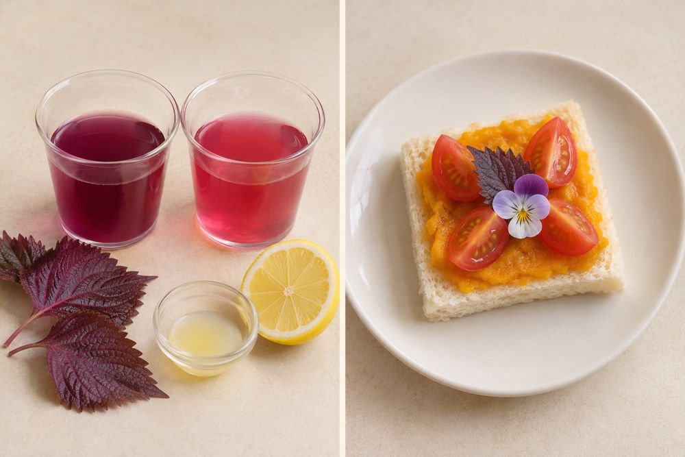
- 紫蘇汁變色實驗：紫蘇葉泡出紫色汁液，滴入檸檬汁後變成粉紅色。
- 南瓜泥免火版：以蒸熟南瓜泥取代起司，場地不能用火或有乳製品過敏學生時使用。
- 迷迭香扦插：剪下枝條插在盆中，每週觀察發根。
- 食用花三問小卡：孩子把三問畫成小卡帶回家，教家人分辨可以吃的花。
食用花可以怎麼用：作品欣賞
放在蛋糕上、包進棒棒糖、撒在沙拉裡，食用花讓點心和料理變得更漂亮。
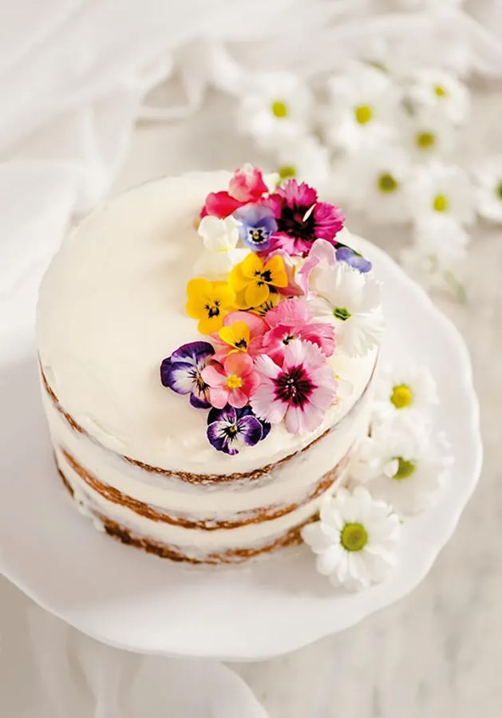
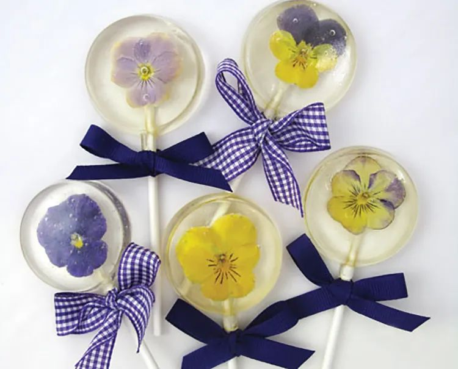